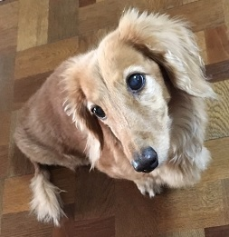
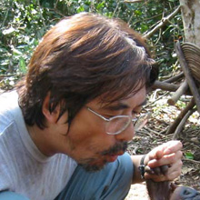
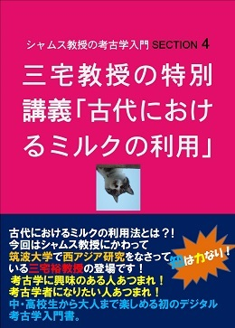

🏠
日
月
縦書き／横書き
| なつ教授の霊長類学入門 SECTION 1 (知は力なり！シリーズ) |
| 金矢 真美 |
| etwas Neues (2016) |
|
なつ教授の霊長類学入門
Section 1

Vivat academia! vivat professores!
vivat membrum quodlibet!
vivant membra quaelibet!
semper sint in flore!
アカデーミア万歳！教授達万歳！
どの学生も万歳！
すべての友人も万歳！
彼らみな常に華の中にあれ！
霊長類の世界にようこそ
温泉ザルに会ってみたい！
シャバーニと一緒に写真撮りたい！
アイちゃんと数字の早当て競争してみたい！
「なつ教授の霊長類学入門」は、世界でもトップクラスの霊長類研究を続けている先生方の紹介とヒト科４属 ― チンパンジーとボノボ、ゴリラ、オランウータン、ヒト ―― について基本的なことから学びます。解説をしてくれるのは、フント大学のマドンナ、黒ラブラドールのなつ教授。つやつやな毛並みはみんなの憧れ、そんな教授の講義をお楽しみください。
第１回 霊長類学入門――日本一から世界一の学問研究へ【本書】
第２回 伊谷教授の特別講義「コンゴの森とボノボの生態」
第３回 松沢教授の特別講義「山が教えてくれたこと」
講義を受講するのはミニチュアダックスフントのダッキーさんです。さっそく受講証を発行しましょう。
現在、本講義では学生募集中です。ペットの写真と一緒に、なつ教授への質問をお待ちしています。これは！という質問や読書感想文は、なつ教授の回答つきで次号に掲載されます。
本書への質問・読書感想文とペットの写真はこちらまで：etwasneuesbooks@gmail.com
- この本は横書きでレイアウトされています。
- また、ご覧になる環境により、表示の差が認められることがあります。
- 本作品では、ルビが（ ）内に表示されています。
はじめに
フント大学理工学部生物科学科なつ教授
みなさん、こんにちは。「霊長類学入門」の講義へようこそ。今回の連続講義では、日本における霊長類の研究の歴史、そして現在、世界でもトップレベルの研究を続けている教授方の紹介をします。次回からの連続講義で、教授方のフィールドワークの様子や、なぜ今の研究の道に入られたのか、大学時代のお話もしていただきます。学生の皆さんにとって素晴らしい体験になることを願います。
ジャングルに行ってみたい・・・
ヒト科４属
昔から現在に至るまで、サルは私たちにとって非常に身近な動物です。なぜなら・・・日本には「ニホンザル」が生息しているからです。
お会いしたことあります？
身近ゆえに、日本ではサルが昔話や絵画などによく登場します。
猿カニ合戦
狩野山雪の「猿猴図」
日光東照宮の見ざる・言わざる・聞かざる

どこの国にもサルっていますよね？
実は、世界のサルのほとんどが赤道近くの亜熱帯・熱帯地方の森林に生息しています。また、ニホンザルはサルのなかでもいちばん北の地域で生息していることで知られています。
寒くってね、ついつい入っちゃう
西洋の民話や絵画ではほとんど見かけないのは、サルが身近な存在ではなかったせいかもしれません。たとえば、ヨーロッパの森にはオオカミがたくさんいましたから、「赤ずきん」や「七匹の子ヤギたち」などの絵本で、ちょくちょく悪役で登場するのはみなさんも覚えているかと思います。
おかあさんだよ、とオオカミは子ヤギたちに声色を変えて言いました
さて、日本語でいう「サル」ですが、英語では「モンキー（monkey）」と「エイプ（ape）」というふたつの単語で表されます。簡単にいうと、しっぽのあるものがモンキー、しっぽがないものがエイプです。
こちらはしっぽがあるので「モンキー」
こちらはしっぽがないので「エイプ」
わたしは？
エイプ？
正解です。ゴリラもしっぽがありませんから「エイプ」の仲間。さらに、ゴリラやチンパンジーは
「類人猿」と呼ばれる仲間になります。カッツェン大学、
『シャムス教授の考古学入門』の連続講義を受けた学生のみなさんは、人類がどこからやってきたのか覚えていますね。ゴリラ、チンパンジーが現在も住んでいるアフリカ大陸からでした。
同じ類人猿でもオランウータンは東南アジアの熱帯雨林に住んでいますが、近年の研究から、人間にいちばん近いゲノム（DNAの総体）を持つチンパンジーの住んでいるアフリカが人類発祥の地と考えられています。
ここで復習です。
「ゴリラ」「オランウータン」「チンパンジー」「ボノボ」は「ヒト」を含めて「ヒト科」に属しています。「チンパンジー」と「ボノボ」は非常に近い種なので、ここをひとつにまとめて、「ヒト科４属」と呼びます。
覚えましたか？
霊長類には「モンキー」も「エイプ」もみんな含まれています。先ほど紹介したニホンザルもその一員。すでに話したように、古来、ニホンザルはその可愛さや賢さ、素早い身のこなしなどから、愛玩用になったり、害獣扱いされたり、はたまた神様の使いとされたり、日本人にとって非常に身近な動物でした。
そんな彼らを今から約70年前に、ある日本人学者たちが研究してみようと思いたちます。やがて彼らの研究対象は世界の霊長類、特にアフリカや東南アジアの類人猿へと広がって、今ではその意思を継ぐ研究者がたくさん育ち、日本の霊長類研究は世界でもトップクラスの学問分野となりました。
気になりません？ どんな人たちが研究を始めたんだろう、って
とっても気になります
それでは、1948年の日本にタイムスリップしてニホンザルの研究をみてみましょう。
日本の霊長類研究の始まり
今西錦司（1902-1992）
「これはまだ、だれも手をつけたことのない領域であるから、どうしてもわれわれの手によって開拓したいのだが、そのためには、若干の旅費を別にして、双眼鏡とノートと鉛筆さえあれば、十分なのだ。あとはわれわれのファイトでゆける」
（左から）川村俊蔵、今西錦司、徳田喜三郎、伊谷純一郎
サルをやらねば！
1948年 ―― 今から約70年前、第二次世界大戦が終わって間もない頃 ―― 宮崎県の都井岬（といみさき）で3人の研究者が双眼鏡で馬を観察していました。京都大学の今西錦司先生とふたりの学部生、伊谷さん（のちの伊谷純一郎先生）と川村さん（のちの川村俊蔵先生）です。
山登りが大好きで、実験室に閉じこもって研究するなんて性に合わない、そんな先生とふたりの学生は京都から遠く離れた宮崎県で馬の調査を始めたのですが、そこで偶然、サルの群れに出会います。その逞しさにたちまち目を奪われた3人はこう思いました。「これはサルをやらなければいけない！」
都井岬には半野生馬がむかしから生息しています
今西先生は、もともと動物社会学に興味がありました。人間は決して特別な存在ではなく、生物のひとつにすぎないのだから、社会というものが人間だけのものではなく、人間以外の動物にも社会があるはずだ、と。これは当時の西洋的な考え方「人間だけが『社会』を持つ」と真逆の考え方でした。また、人間が最初から固有の文化や社会を持っていたわけではなく、進化の過程で手に入れてきたのであれば、動物の社会にも人間の文化や社会の原型が見れるはず、とも考えました。
「文字はおろか言語というものさえない動物の社会の中にはいりこんで、観察者がその社会の動きを、動物にかわって徹底的に記録する」
そこから得た記録の集積から見えてくる「動物の社会における歴史性の研究」のためには、長期にわたって群れ全体を把握するフィールドワークが欠かせません。「さっそくサルの調査に取りかかろう」 ―― 3人は交代で大分県の高崎山にいるサルの群れと、宮崎県の幸島にいるサルの群れの観察を始めます。
この都井岬の灯台から見えるのが・・・
幸島です
一方、こちらは大分県、遠く向こうにみえる山が高崎山
現在は高崎山自然動物園があります
餌付け
ところがそこには想像以上の困難が立ちはだかっていました。ウマの群れは平野に暮らしているので、その数やそれぞれの特徴も調べやすいのですが、サルはすばしこく、おまけに住まいは山の中。どんなにみんなで山の急斜面を追いかけても、なかなか群れの様子がつかみきれません。
私でよろしければ追いかけます
1950年―― 幸島の地元の人が、戦争前はサルにサツマイモをあげていたので、自分たちにとても慣れて、みんなで海岸の砂浜へ出てきていた、と今西先生たちに教えてくれます。餌付けです。さっそく試してみると、彼らは山から下りてきてサツマイモがまいてある海岸までやってきたのです。
同時期、高崎山でもサルを観光の目玉にしよう、と市長が餌付けを目論んでいました。ねらいは違っても方法はひとつです。2年後には幸島のサル、その翌年には高崎山のサルの餌付けに成功し、全員残らず山から広場へと顔を出すことで、個体識別ができるようになったのでした。
高崎山のサルのごはんタイム（現在）
個体識別
今西先生たちの調査方法である個体識別とは、1匹ずつサルに名前を付け、顔を覚えていく方法です。当時の西欧では「1匹ずつサルに名前を付ける」ことなどまったく考えられない方法でした。動物は人間のような個性や文化を持っているはずがない、人間だけが別格、と思っていたからです。
ところが、根気よく高崎山のサルを観察していた伊谷さんが、オスザル同士には直線的な順位ができていることを発見します。順位がある、ということは、群れの中の構成員に生活経験の違いから生じる生活能力の差があること、つまりその差が社会的地位をつくるから順位ができる、というわけです。個体識別法により、今まで知られていなかったサルの群れの構造や機能がだんだんと分かってきました。
＜名前のつけ方＞
幸島にある、京都大学野生動物研究センターの「幸島観察所」では、今も一頭一頭のサルに名前をつけて調査を行っています。幸島では名前の付け方に決まりがあって
- オスは動物の名前、メスは植物の名前
- 兄弟は同じ文字で始まる（例）カメ、カバ、カケス・・・
- 同じ名前は二度と使えない
- できるだけ３文字以内
といった具合です。
「なつ」ってつけたら、ナス、ナズナ、ナデシコ・・・あ、4文字・・・
「ダッキー」ならダイズ、ダリア、ダイコン・・・ダメダメ
イモのイモ洗い
さらに今西先生たちは、長期間の観察によってサルにも「文化」があり、それを継承していると考えます。そのひとつに、1953年に幸島で目撃した「イモ洗い」がありました。
いつものようにサルを観察していた川村さんは、ある日若いメスザルが海岸でサツマイモを洗って食べているのを見てびっくりします。今まで、どのサルもそんなことをしたことがなかったからです。そのメスザルにはイモという名前が付けられました。
画期的な「発明」をしたイモ
しばらくするとイモのまねをするサルが現れました。イモの友だちや兄弟・姉妹です。洗うことによって、まわりについている砂がとれますし、塩水でサツマイモに味がつくからでしょう。そのうち、イモの周りのおとなのサルも真似しだします。
イモ洗いが大流行に・・・
イモはもうひとつの技も発明しました。撒き餌の麦を、砂がついたまま海に入れると麦だけが浮き上がってくるので、それをすくって食べる、という技です。まるで人間が砂金を採取しているような方法でした。
こうして、イモが始めたふたつの技術「イモ洗い」と「砂金採り」は次の世代、またその次の世代へと引き継がれていきます。今西先生たちはこれを幸島のサルたちの新しい「文化」と考えました。
現在も洗っています！
一方、高崎山のサルの餌付けが成功して観光客が増えると、日本各地で観光地の目玉としてサルの餌付けが行われました。その数はどんどん増えて、サルを研究する大学も増え、教授や学生たちが日本中を駆け巡りました。こうしてニホンザルの研究は活気を帯びてきました。
1957年、バンコクで行われた学術会議で、川村さんは今までのニホンザルの研究成果を発表し世界各国の学者たちを驚かせます。日本人がこんな研究をしていたことを誰も知らなかったからです。幸島でのニホンザル研究からちょうど10年経っていました。
「今度はアフリカでゴリラを研究してみようじゃないか」と、今西先生は伊谷さんを連れてアフリカを目指すことになりました。
類人猿の研究へ
それまでの人類学者たちは、人間と人間以外の動物とを区別することに興味を持っていたましたが、今西先生たちは、動物としての人間がいつどのようにして、人間らしい人間に変わってきたのか、という 「人間社会の起源」に興味を持っていました。
人間の社会には家族という社会単位があります。人間の家族の特徴として
今西先生はこの4つを挙げました。「インセスト・タブー」と「外婚」が両立していないと、社会は持続しません。また、外婚を支障なく続けていくには、ある程度の大きさを持った「地域社会」の存在が必要です。「夫婦間における分業」とは、自分たちの子どもを育てるための助け合いのことを指します。
長期にわたってニホンザルを観察してきた今西先生たちは、家族によって構成されている人間社会と、群れという大きなグループで構成されているニホンザルの社会を比較しても隔たりが大きすぎるため、その間を埋めたいと思っていました。ニホンザルに代わって、人間と近い類人猿の社会と人間社会とを比較すれば、人間の社会の起源が見えてくるのではないだろうか ―― こう考えると1958年、今西先生と伊谷さんはゴリラを長期にわたって調査するために適した場所を探すアフリカの旅に出発します。
これが現在まで続く、日本の類人猿研究の第一歩です
長い歴史なんですね
今西先生自身はアフリカ調査の土台を作ると、今度はたくさんの若手の研究者をアフリカに送り込みました。途中、ゴリラの住むコンゴが内戦となり、やむなく研究対象をチンパンジーに移したり、70年代にはチンパンジーの仲間であるボノボの研究を始めたり ―― 類人猿だけでなく世界中の霊長類の調査も視野に入れると、国内外の研究者たちが次々と京都大学を目指してくるようになりました。今西先生は著書の中でこんなことをおっしゃっています。
「既知の事実の上に安住しているかぎり、いつまで待っても、未知の扉は開かれない。仮説は未知の扉を開くに必要なカギである。しかし、カギを持ってじっとしていたのでは、やっぱり扉は開かれない。カギを持った者が、進んで扉を開きにゆかなければ、扉は開かれないのである」
「さて開いてみると、またそのさきにカギのかかった扉がある。こんどはその扉を開くためのカギが必要になってくるというわけで、第一線にたつ学者というのは、結局こんなことをくりかえして一生を終わる。それでよろしいのだ」
「カギはすでに手中にある。さあ、おのおの方、またアフリカへ出かけることにしようではないか」
こうして今西先生のカギは、未知の扉を探す世界中の研究者に引き継がれています
日本モンキーセンターへようこそ！
海外での類人猿研究に目を向けている間にも、今西先生が国内でのニホンザル研究を忘れることはありませんでした。企業や国も動かして、ふたつの施設を作ることになります。日本モンキーセンターと京都大学霊長類研究所です。
1955年、愛知県の企業から、犬山市にもサルを集めてくれないか、と頼まれます。高崎山の餌付けの成功で、国内ではニホンザルが観光の目玉となっていた頃でした。世界一のサルの研究をしてきたんだから、どうせだったら世界一のサルの動物園を作ってみようじゃないか ―― 世界中からサルを集めてみよう、ということで、翌年の1956年には日本モンキーセンターが開設されました。
現在の日本モンキーセンターは、64種918個体（2016年10月現在）がいる世界屈指のサル類動物園。さらにユニークなのは、たった3人の京都大学の教授で運営している動物園なのです。その3名のご紹介はのちほど。
2016年は「日本モンキーセンター」誕生から60年の年です！
2016年、設立60周年を迎えました
自由に歩き回るおさるさん・・・見えますか？
見えた？
いえ～い！
運がよければ博物館長も見れるカヌー乗り場
運がよければ所長も見れるカヌー乗り場
博物館で世界のサルの勉強もできる
数字が分かるチンパンジーのアイちゃんに勝負することだってできる
ほかにもたくさんご紹介したいのですが・・・次回につづきます！
霊長類研究所へようこそ！
霊長類研究所の「ジャングル」
おーい！見えるかな？
「日本方式」の霊長類生態学が世界に広まると、日本国内でも霊長類の研究を後押しする流れがでてきました。1967年に設立されたのが、京都大学霊長類研究所です。
京都大学霊長類研究所は、京都大学と同じ京都市にあるのではなく愛知県犬山市にあります。そう、日本モンキーセンターの隣にあります。豊かな自然に恵まれたおよそ10 ヘクタールの土地には、生息地の森林を再現した飼育施設があり、そこには13個体のチンパンジーの集団が住んでいます。
研究所では、霊長類に対して10の分野： 進化形態分野、ゲノム多様性分野、系統発生分野、生態保全分野、社会進化分野、思考言語分野、認知学習分野、高次脳機能分野、総合脳システム分野、遺伝子情報分野からなる研究をおこなっています。人間を理解するには、他の霊長類から得た情報を自分たちの専門の分野に持ち帰り、 相違を調べていく、といった地道な研究が必要なのです。
ここでは数字を覚えるチンパンジーのアイちゃんや彼女の息子のアユムくんも暮らしています。
次回からの連続講義は？
次回からの連続講義は、今西先生からのカギを現在受け継いでいる3人の教授に焦点を当てて紹介します。

ボノボ研究の第一人者、伊谷原一教授は、1980年代から現在のコンゴ民主共和国で野生ボノボの研究を、タンザニアでチンパンジーの調査研究をなさっています。コンゴでのフィールドワークの様子と、類人猿のなかでもあまりその生態が知られていなかったボノボについてお話していただきます。
チンパンジー研究の第一人者、松沢哲郎教授は、チンパンジーの「アイちゃん」との研究「プロジェクトAi」でおなじみですね。研究に向き合う姿勢を作ってくれた登山とのつきあいと、科学と哲学から導き出した新しい学問分野についてお話していただきます。
ゴリラ研究の第一人者、山極壽一教授は、現在、京都大学の総長という重責にいます。それでもやっぱり大好きなのはフィールドワーク。そのおもしろさと、地元の人たちのコミュニケーションの大切さ、そして人間社会における「家族」の在り方についてお話していただきます。
お気づきでしょうか？この3教授が、日本モンキーセンターの「運営陣」でもあるんです！
おつかれさまでした
なつ教授
興奮して眠れません
ダッキーさん
くー
＜監修＞
伊谷原一（いだに げんいち）
愛知生まれ。京都大学教授。理学博士。京都大学野生動物研究センター教授、日本モンキーセンター附属動物園園長。1984年、沖縄の伝統的漁撈を対象にした生態人類学的研究を開始。その一方で、中央アフリカのザイール共和国（現コンゴ民主共和国）で野生ボノボを、隣国のコンゴ共和国やタンザニア共和国で野生チンパンジーや小～大型哺乳類を対象に社会生態学的研究に従事。また、アフリカ熱帯多雨林や乾燥疎開林の保全活動も行う。国内では、飼育下野生動物の福祉を目的に、動物園・水族館との連携事業を推進している。
＜編集・著作＞
金矢 真美（かなや まみ）
東京生まれ。上智大学文学部ドイツ文学科卒業。教育出版社での文部科学省検定高校英語教科書の編集業務を経て、現在、シリア在住のGhaythaa DeebとIFサイトを立ち上げ、世界中の人たちと英語でおしゃべりをする場を運営、エトヴァス・ノイエスで電子書籍を制作・販売する。趣味は、気心の知れた人たちと楽しい時間を過ごすこと。
＜参考サイト＞
＜写真提供＞
辰巳 祐樹（なつ）
五木田 友子（ダッキー）
松沢 哲郎（アユム）
Wikimedia commons
https://commons.wikimedia.org/
（public domainのものは省略）
ニホンザルFile:Snow_Monkeys.jpg 18:40, 27 November 2016(UTC) License=CC BY-SA 2.0
見ざる言わざる聞かざるFile:Monkeys-nikko-japan.jpg 18:41, 27 November 2016(UTC) License=CC BY-SA 3.0
温泉ザルFile:Jigokudani_hotspring_in_Nagano_Japan_001.jpg 18:42, 27 November 2016(UTC) License=CC BY-SA 3.0
カニクイザルFile:Singe1_ag1.jpg 18:42, 27 November 2016(UTC) License=CC BY-SA 2.0
チンパンジーFile:Schimpanse_Zoo_Leipzig.jpg 18:43, 27 November 2016(UTC) License=CC BY 2.5
ゴリラFile:Gorilla_2582.jpg 18:43, 27 November 2016(UTC) License=CC BY-SA 2.5
都井岬File:ToiMisaki01.jpg 18:43, 27 November 2016(UTC) License=CC BY-SA 3.0
都井岬のウマFile:Misaki-uma.jpg 18:44, 27 November 2016(UTC) License=CC BY 3.0
都井岬灯台File:Toi_cape.jpg 18:44, 27 November 2016(UTC) License=CC BY-SA 3.0
高崎山景色File:Mt.Takasaki_02.jpg 18:45, 27 November 2016(UTC) License=CC BY-SA 3.0
高崎山File:Takasaki_Mountain.JPG 18:45, 27 November 2016(UTC) License=CC BY-SA 3.0
高崎山のサルFile:Takasakiyama_esayari_01.jpg 18:46, 27 November 2016(UTC) License=CC BY-SA 3.0
―――――――――――――
なつ教授の霊長類学入門 1
2016年 11月 30日 発行
監修 伊谷 原一
編集・著作 金矢 真美
発行所 エトヴァス・ノイエス
etwasneuesbooks@gmail.com
http://etwasneues.wpblog.jp/
Copyright© 伊谷 原一・金矢 真美 2016年
- この図書は、デジタル配信用です。
- 本作品の内容あるいはデータを、全部・一部にかかわらず、無断で複製、転載、改ざん、改変、公衆送信（インターネット上への掲載を含む）することは、法律で禁止されています。また、個人的な使用を目的とする複製であっても、コピーガードなどの著作権保護技術を解除して行うことはできません。
IFについて
2016年 ― 「もしわたしたちが一緒に何かを考えたら・・・」 シリアと日本、西と東のアジアの両端にあるふたつの国から、IFというサイトが誕生しました。読む人と書く人がお互いやりとりするなかで、物語、考え、趣味、意見などを世界中の人たちとシェアしながらの、読者参加型のサイトです。現在までに世界２００地域の人たちがアクセスしています。サイトでは英語を使っていますが、完璧な英語でなくてかまいません。ぜひ遊びにきて、皆さんのIFを教えてください。
website & facebook

ドイツ語で「何か新しいこと」を意味するエトヴァス・ノイエスでは、みなさんの知的好奇心をくすぐるさまざまな分野の書籍を出版しています。
あるときは発掘現場へ飛び込み・・・
あるときは音楽の調べを追いかけ・・・
あるときは小説の主人公になり・・・
そしてあるときは人類の進化をなぞり・・・
さあ、未知の世界へ出発です！
http://etwasneues.wpblog.jp/
知は力なり！ ベンツ教授の＜英語で読む短編小説＞シリーズ
ご存じフント大学のベンツ教授がお贈りする英文学の世界！
がんばって読んでください
楽しい質問にはプレゼントを考え中・・・
ところで
G.K.チェスタトンを、哲学者の鷲田精一さんが「折々のことば」（朝日新聞、2016年10月16日）で取り上げていたので紹介しましょう。
「鎖の強さはいちばん弱い環（わ）で決まるのだ」
For no chain is stronger than its weakest link.
「こうならなくてよかった」と思えたときにはじめて、人は物事が現にこうあることの意味を悟る。「理想」にかまけていると物事はよく見えない。おのれの不足を思い知る「謙虚」こそが眼を開くのであって、そのとき人は尊大になるどころか「けし粒の前にもひれ伏したくなる」。
そんなチェスタトンのことばに従って、謙虚なベンツ教授と一緒に英文で小説を読んでみましょう！
初の日本語・英語対訳リンクつきサイドリーダー
英語が苦手でもサクサク読めちゃう！一度お試しあれ！
＜順次発刊予定です！お見逃しなく！＞
知は力なり！ ルーカス教授の＜エル・システマ入門＞シリーズ
カッツェン大学の永遠のライバル、フント大学ではハンサムなゴールデン・レトリバー、ルーカス教授の講義も受講できます！
いっしょに音楽を楽しみましょう！
素敵な質問にはプレゼントを考え中・・・
＜エル・システマ情報とともに、シリーズ発刊予定です！お見逃しなく！＞
知は力なり！ なつ教授の＜霊長類学入門＞シリーズ
フント大学では新たに黒ラブラドールのマドンナ、なつ教授の霊長類学講義も受講できます！

一緒にアフリカへGO!

SECTION 1 日本一から世界一の学問研究へ【新刊】

SECTION 2 伊谷教授の特別講義「コンゴの森とボノボの生態」【新刊】
＜順次発刊予定です！お見逃しなく！＞
知は力なり！ シャムス教授の＜考古学入門＞シリーズ
カッツェン大学のシャムス教授がお贈りする「考古学」の魅力120％の入門書
わが大学へもどうぞ。お待ちしております
楽しい質問やペットの写真を送ってくださった読者には、毎セクション１名にシャムス教授よりトートバッグのプレゼント！
シャベルと刷毛を入れて、さあ、出発だ！
SECTION 1で見事トートバッグをゲットした「たくみくん」
シャムスバッグでサンマを物色中

＜以下、順次発刊予定です！お見逃しなく！＞
基本に帰れ！＜キャラ＆ゴロ＞シリーズ
2017年、etwas Neues では新たに「基本に帰れ！」シリーズが登場しました。
覚えているようで覚えていない
記憶があやふや
こんなことをいまさら誰にも聞けないぞ
そんなときにはこれ！

「キャラとゴロで暗記する中学の社会 日本の地域と特産物（基礎編）」
どんとこい！これで明日のテストは100点だ！
＜引き続きお楽しみに＞